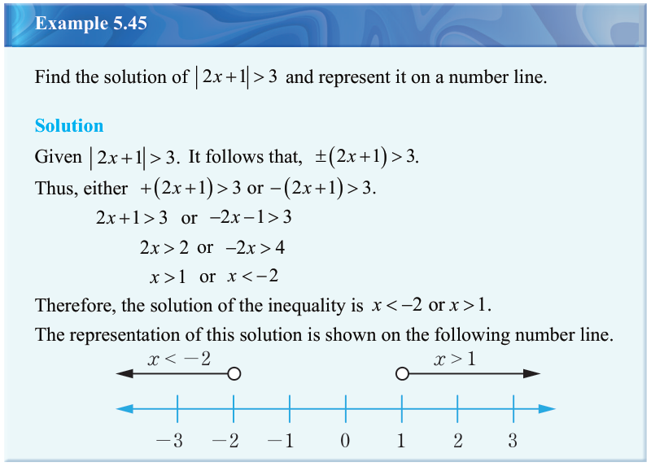
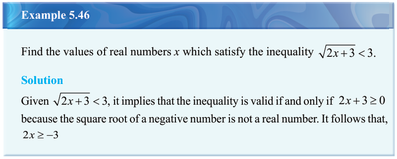

Combining the two inequalities gives,
-2 \le x \le 2
Therefore, the solution of the inequality is represented on the following number line.

Example 5.45
Solution

Example 5.46
Solution

Combining the two inequalities gives,
Therefore, the solution of the inequality is represented on the following number line.

